-
Как правильно брать щенка в руки
Он еще мал и мышцы, связки у него слабые и если таскать щенка, подхватывая его за передние лапы, то очень легко травмировать его на всю жизнь;
Брать щенка надо обеими руками под грудь и под седалище одновременно, либо с обоих боков, захватывая область грудной клетки и лопатки, а не под живот;
Держать следует крепко, чтобы щенок не вырвался и не упал на пол. Лучше же самим почаще приседать к нему и без крайней нужды его не поднимать.
-
Что делать нельзя
- Тянуть что-либо из пасти до 6-8 мес. – испортится прикус;
- Давать острые птичьи кости – возможно внутреннее кровотечение;
- Давать вареные, острые кости;
- Давать сладости;
- Давать корм горячим или из холодильника;
- Кормить с пола – у собаки должна быть подставка для миски. По мере роста щенка высота подставки должна увеличиваться;
- Спускаться щенку самостоятельно по лестнице до 4-6 месяцев. Иначе может быть растяжение связок, подвывих лап и т.п. Далее необходимо следить, чтобы щенок спускался потихоньку, не спрыгнул случайно с лестницы, не пытался перепрыгнуть через несколько ступенек и т.п. Это все необходимо для того, чтобы собака не травмировалась при спуске;
- Гладить по ушам – чтобы щенок не развешивал уши и не закладывал их;
- Часто мыть собаку;
- Устраивать место для собаки на сквозняке, на цементном полу, в ванной, на балконе, лоджии и т.п.;
- Делать место жестким – будут протерты локти;
- Наказывать собаку, замахиваться на нее. Щенок не может сразу усвоить многочисленные запреты. Наказывать за «преступление» можно, только застав на МЕСТЕ «преступления», в МОМЕНТ его совершения. Если Вы пришли домой, а Ваши любимые тапочки оказались разобраны до основания, щенок прыгает от радости, увидев Вас, а Вы начнете ругать его, он решит, что попало ему за столь бурную встречу, а про тапочки он даже не вспомнит;
- Давать собаке картошку, горох, кукурузу, сырое тесто, виноград, авокадо, шоколад, молоко, специи;
- Совершать длительные прогулки сразу после еды;
- Надевать на щенка шлейку – передние конечности могут формироваться неправильно;
- Давать прыгать со стула, дивана, кресла. Иначе может быть растяжение связок, подвывих лап и т.п. Поэтому оставлять щенка на диване (кровать, кресло) одного также не рекомендуется;
- Дети не должны садиться на собаку верхом.
-
Что нужно приобрести перед появлением щенка
- Лежанка;
- Пеленки, много пеленок;
- Миски на штативе;
- Игрушки;
- Шампунь и мыло для лап;
- Корм;
- Ошейник и поводок;
- Лакомства для начальной дрессировки;
- Когтерез;
- Щетка для вычесывания.
-
Место/Лежанка
Место у щенка должно быть достаточно мягким и просторным;
Лучше всего для него подходит небольшой матрасик, укрытый чистой накидкой или простыней, которую по мере необходимости можно поменять или выстирать;
Расположить место лучше всего так, чтобы щенок оттуда мог наблюдать за Вами;
Проверьте, чтобы оно находилось не на сквозняке и желательно не на проходе, т.к. щенок первое время (1,5-2 месяца) нуждается в длительном сне, поэтому если в доме есть дети, то им нужно объяснить, что во время сна щенка лучше не трогать;
Еще одно важное условие – размеры лежанки должны позволять собаке вытягиваться на всю длину корпуса, потому что Уиппеты имеют особенность спать очень экономно, но в какой̆-то момент они начинают считать себя большими собаками и растягиваться.
-
Игрушки
Щенок должен грызть – это требуют растущие зубы, и нужно обеспечить его соответствующими предметами – игрушками, чтобы он не портил Вашу обувь и другие предметы обихода;
Это могут быть специальные резиновые косточки, резиновые литые мячи (которые невозможно разгрызть) и т.д.;
Полые резиновые, мягкие игрушки, пластмассовые могут быть разгрызены, и щенок может подавиться их кусочками. По этой причине следует избегать давать играть щенку с обычными игрушками для детей;
В помещении, где будет находиться щенок, обязательно уберите все мелкие предметы и электропровода. Перегрызая провода, он может покалечиться от включенных электроприборов (телевизор, холодильник, зарядное устройство и т.д.);
Со щенком также нельзя играть тряпкой, он не поймет разницы между тряпкой и занавеской или скатертью и будет рвать и то, и другое;
Нельзя играть со щенком в «перетяжки», т.к. это может испортить прикус;
Ни в коем случае не давать щенку играть старым ботинком или еще какой̆-нибудь отслужившей свое обувью, так как щенок не сможет отличить новые от старого ботинка.
-
Гигиена
Следить за чистотой подстилки. Чем чище подстилка, тем лучше собака. Для удобства рекомендуется иметь несколько сменных наволочек на подстилку, периодически менять их и стирать;
Рекомендуется один раз в два дня чистить шерсть специальной резиновой щеткой, с небольшими резиновыми пупырками;
После прогулки обтирать лапы и живот влажной тряпкой или обмывать чистой водой без мыла;
Мыть щенка без особой надобности не следует, только в случае сильного загрязнения;
Если щенок сильно испачкался, можно вымыть его специальным зоошампунем для щенков, после чего хорошо промыть шерсть водой и насухо вытереть. После купания беречь от сквозняков;
Уши по мере загрязнения необходимо чистить ватным тампоном, смоченным специальным ушным лосьоном (если его нет, можно использовать хлоргексидин);
Существует миф, что собака на прогулке стачивает когти об асфальт, но это не так, и не все мы гуляем на асфальте, чаще на земле и траве и к тому же у них другое строение подушечек на лапках;
Если не стричь когти раз в неделю – они потом могут причинить много хлопот суставам у растущего щенка;
ВНИМАНИЕ! Стричь когти нужно ОЧЕНЬ осторожно, чтобы не отрезать лишнего! В случае если вы задели живую ткань и пошла кровь, необходимо СРОЧНО обработать рану сухой марганцовкой;
Внимательно следите за состоянием зубов Вашего малыша, особенно в период их смены. Если молочные зубы мешают росту постоянных, возможны проблемы с прикусом и поставом клыков щенка. В том случае если молочные зубы не выпали самостоятельно, необходимо обратиться к ветеринару для того, чтобы их удалить;
Никогда не тяните изо рта игрушки, не разрешайте на улице играть с поводком;
Когда Ваш щенок подрастет, следите за тем, чтобы у него не образовался зубной камень, что неминуемо приведет к заболеваниям ротовой полости;
Для собак имеются специальные зубные пасты;
Аллергия (красные уши или перхоть) возможна на смену корма или на избыток витаминов;
Глаза должны быть чистыми. Если есть подозрение на что-то серьезное – к ветеринару (особенно при гнойных выделениях), это может быть следствием конъюнктивита;
Если Ваш щенок ездит на попе, причиной̆ этому, как правило, является воспаление анальных желез, и вовсе не обязательно, что это могут быть глисты. Попросите ветеринара показать Вам, как их можно прочистить, и в дальнейшем Вы сможете проводить эту процедуру самостоятельно.
-
Приучение к туалету
После сна у щенка появляется естественная потребность – освободить мочевой пузырь и кишечник, в этом случае хорошо вынести щенка на улицу (только после всех прививок) или в отведенное в квартире место;
Очень хорошо подходят впитывающие и непромокаемые пеленки небольшого размера, продающиеся во многих аптеках;
Проситься сознательно щенки начинают с 4-х месяцев, но многое зависит от умения и терпения владельцев;
Но хочу вам напомнить, что щенком собака считается до 9 месяцев, потом она становится подростком, и только в 2 года вы можете считать свою собаку взрослой;
Об этом нельзя забывать. Поэтому если ваш щенок в 8 месяцев вдруг не дотерпел или промахнулся, не стоит из-за этого переживать, это нормально;
Как только заметите, что щенок начинает крутиться и присаживаться, нужно посадить его в приготовленное для этих целей место и подержать немного.
-
Прививки
Прививать собаку можно только в ветеринарной клинике или вызвать врача на дом!
Перед прививкой щенок должен выглядеть совершенно здоровым и хорошо себя чувствовать;
После прививки желательно понаблюдать за щенком в течение 5-6 часов, и если появятся признаки аллергической̆ реакции, такие как отек носоглотки, затрудненное дыхание, затвердение губ, немедленно позвонить врачу;
Аллергические реакции на прививку очень редки, но, к сожалению, встречаются;
Постараться не совмещать за несколько дней до прививки и после нее обработку от блох и клещей.
-
Обработка от блох, клещей и глистов
Помните, что перед прививкой обязательно надо прогнать глистов;
Если в результате такой о бработки обнаружится, что собака была заглистована, то обработку надо повторить и прививать собаку только после консультации с ветеринаром;
Клещи и блохи могут являться переносчиками различных заболеваний;
Одно из опаснейших заболеваний, переносимых клещами – это пироплазмоз;
При несвоевременном оказании собаке ветеринарной помощи гибель вашего любимца может наступить на 5-й день болезни;
Лучше всего использовать капли от блох и клещей. Инструкцию по применению средства Вам дадут вместе с препаратом в ветеринарном магазине;
Обратите внимание, что весь состав должен быть нанесен на кожу животного, а не на шерсть;
Обработка делается регулярно, примерно 1 раз в месяц, лучше всего на ночь; начиная с появления первых проталин;
Обрабатывать собак нужно до самых холодов!
Препараты для щенков – Фронтлайн, Инспектор;
В дальнейшем, когда ваша собака подрастет список капель может пополнить Барс и Адвантикс;
Также, если по каким-либо причинам капли вам не подходят, вы можете воспользоваться специальным ошейником или таблетками (Бравекто, Симпарика).
-
Кормление
Первые дни после приобретения щенка кормить его нужно тем же, чем кормил его заводчик;
После того, как щенок адаптируется в новом доме, при желании, его можно постепенно переводить на рацион, наиболее приемлемый̆ для нового хозяина;
Вам необходимы две миски – для еды и для воды;
Миска с водой должна стоять постоянно. Не забывайте следить за тем, чтобы вода была чистая и свежая;
Корм ставят только на время еды, не больше 15 минут;
Если щенок балуется, отвлекается, плохо кушает, несъеденный̆ корм убирают обязательно!
Ни в коем случае не уговаривайте щенка и не гоняйтесь за ним с миской, это приведет к тому, что даже взрослую собаку Вы будете «уговаривать» покушать. И как следствие этого – собака будет постоянно худой, кормление превратится в бесконечную муку и для Вас и для Вашей собаки. Щенок быстро поймет – вовремя не съел – еда кончилась, в этом случае проблем накормить собаку у Вас не будет;
И еще одно желательное условие – щенка надо кормить с подставки такой высоты, при которой дно миски находится на уровне или чуть выше локтей, чтобы не искривлялись шейные позвонки, сам позвоночник и суставы передних ног;
Высота подставки должна увеличиваться по мере роста щенка;
Вода должна стоять также на подставке;
Пища должна быть умеренно теплая;
Количество кормлений зависит от возраста: 1-2 месяца – 5-6 раз в день. 2-4 месяца – 3-4 раза в день. 4-6 месяцев – 3 раза в день. С 7-8-ми месяцев – 2 раза в день;
После еды дайте щенку покой, не тормошите его, не гуляйте сразу после еды во избежание заворота желудка;
Помните, как правило, УИППЕТ ГОЛОДНЫЙ практически ВСЕГДА, поэтому не давайте ему возможности манипулировать собой;
Ни в коем случае не подкармливайте щенка в промежутках между кормлениями, ничего не давайте со стола, иначе в скором времени Вы постоянно будете лицезреть перед собой во время обеда «бедного, несчастного, голодного» пса со слюной до пола;
Поэтому рекомендуется после того, как щенок покушал, командой «НА МЕСТО!» выпроводить его;
Если Вы наберётесь терпения и будете последовательны в своих действиях, то после кормления Ваш питомец сам будет уходить из кухни;
Если в доме есть дети, то объясните им, для чего это делается, т.к. дети чаще всего идут на поводу у «оголодавшего» животного, подсовывая им под столом лакомые кусочки. Скажите им, что ничего, кроме огромного вреда это щенку не принесет.
-
Сухие корма
Проще и правильнее выращивать щенка, используя сухие корма, но обязательно это должен быть корм «премиум» или «суперпремиум» класса;
Эти корма должны подбираться по возрасту и размеру собаки;
Не рекомендуется экономить на кормах и использовать корма «эконом» класса.
Торговых марок приемлемых сухих кормов очень много. Фирмы производители выпускают большой диапазон кормов, рассчитанных на собак разных возрастных групп и ведущих различный образ жизни;
Вначале Ваш щенок питается кормом для щенков, что указано на упаковке корма, но обратите внимание на содержание протеина и жиров в выбранном Вами корме. После этого Вы переведете щенка на рацион для юниоров или молодых подрастающих собак, а уже после этого на обычный рацион (на упаковке корма всегда указана возрастная категория);
Если молодая собака будет иметь недостаточный вес (что совсем не редкость для нашей породы!), его придется временно перевести на другой корм «энерджи» или увеличить объем обычного корма;
Внимательно следите за весом Вашей собаки, её ростом, дабы предупредить рахит;
При решении кормить щенка сухими кормами надо обязательно кормить ТОЛЬКО сухим кормом, позже мы можем вводить с осторожностью, мясо, кисломолочные продукты, овощи и фрукты;
Примерно до 3-х месяцев сухой корм необходимо размачивать до кашеобразного состояния, но только чуть теплой, но не горячей водой. Потом постепенно корм дается все более сухой. При этом питьевая вода должна быть в миске постоянно, даже если Вы размачиваете корм!
О том, какой именно объем корма нужно давать щенку, Вас проинформирует таблица на упаковке. По ней нетрудно определить дневную норму потребляемого корма, исходя из веса и возраста щенка, делите ее на количество кормлений и, таким образом, определяете порцию, которая необходима в данный момент. Однако таблицы не являются непреложной истиной. Для собак, как и для людей, все очень индивидуально. Вы должны ориентироваться, глядя на свою собаку. Щенок не должен быть слишком худым.
-
Натуралка
Если все-таки Вы решили кормить своего щенка натуральной пищей, надо помнить, что это очень серьезное и ответственное решение. Ведь все, что с первых месяцев жизни Вы заложите в своего маленького друга, а правильное питание – это основа основ;
По поводу составления рациона, вы можете обратиться к заводчику и врачу диетологу, которые вам помогут.
Памятка владельцу
Поздравляем вас!
Вы стали не просто владельцем щенка, который очень скоро из этого маленького, забавного звереныша превратится в красивую элегантную собаку, Вы приобрели верного искреннего друга на очень долгие годы.
